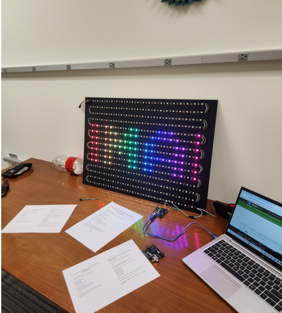

Dominic Walker
Summary
Worked on projects and workshops involving soldering, wiring, and coding
Experience
Internship Student, AT&T, August 2022 - Current
Raspberry Pi: Conducted a project to create a script to make a LED light blink using an Raspberry Pi and blank breadboard. It was a success and provided useful knowledge on how to wire and code.
LED Sign: During Q4 Lone Star Labs wanted to develop a workshop that would allow TDPs to learn how to wire, solder, and code an Arduino Uno.
Soldering: In the Lone Star Labs, a considerable number of things need to be soldered, so it was decided that at least a few people knew how to solder, so there were practice runs teaching TDPs proper soldering techniques.
Meetings: Being able to sit in on meeting provided useful information on how to conduct oneself in one. what goes on during the meetings, and a preview into what is expect in the following weeks and months.
Creating User Manuals: Knowing how to properly operate equipment in Lone Star Labs is very important, so there have been user manuals made to inform TD’ on how to properly operate such equipment as the soldering iron, and the 3D printer.


